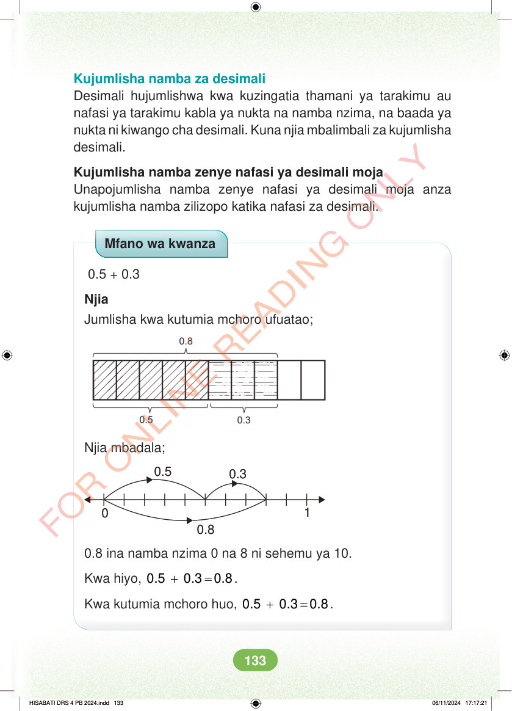

Kujumlisha namba za desimali Desimali hujumlishwa kwa kuzingatia thamani ya tarakimu au nafasi ya tarakimu kabla ya nukta na namba nzima, na baada ya nukta ni kiwango cha desimali. Kuna njia mbalimbali za kujumlisha desimali. Kujumlisha namba zenye nafasi ya desimali moja Unapojumlisha namba zenye nafasi ya desimali moja anza kujumlisha namba zilizopo katika nafasi za desimali. Mfano wa kwanza 0.5 + 0.3 Njia Jumlisha kwa kutumia mchoro ufuatao; Njia mbadala; 0.3 0.5 0 0.8 0.8 ina namba nzima 0 na 8 ni sehemu ya 10. Kwa hiyo, + = 0.5 0.3 0.8. Kwa kutumia mchoro huo, + = 0.5 0.3 0.8. HISABATI DRS 4 PB 2024.indd 133 HISABATI DRS 4 PB 2024.indd 133 06/11/2024 17:17:21 06/11/2024 17:17:21